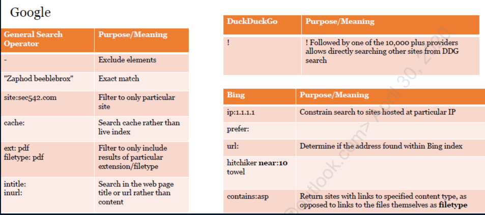
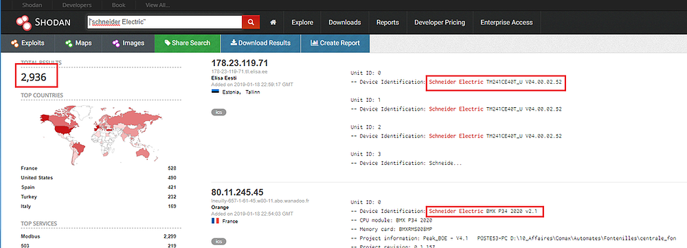
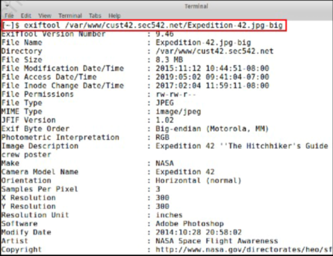
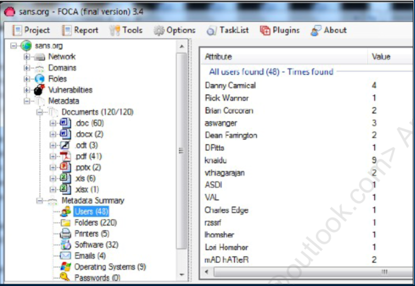
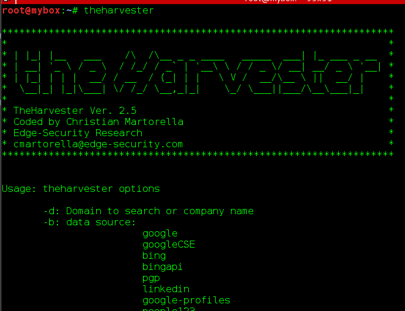
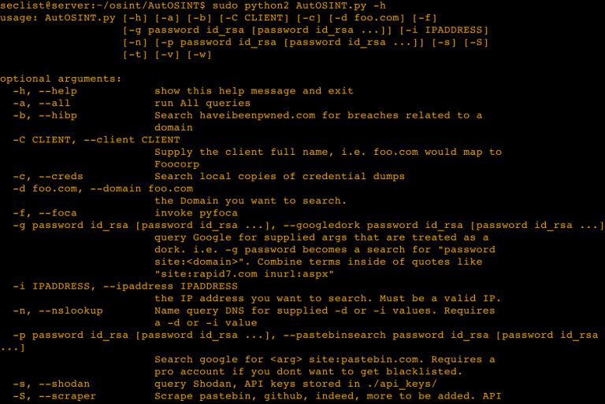

الOSINT
- ما هو ال OSINT ؟
= هي عملية البحث عن البيانات الموجودة من المصادر العامة وجمعها وتحليلها بقصد الاختراق.
- هناك تقنية تسمّى filter bubble تُستخدم للتلاعب بنتائج البحث بالارتكاز على البيانات التي تمتلكها
= إذا ال Filter bubble يمكن أن يكون لها بعض التأثير على النتائج ، وإحدى النقاط الرئيسية فيما يتعلق بال OSINT هي أن الأشخاص المختلفين الذين يقومون بنفس البحث قد يتلقون نتائج مختلفة. ولكن لاحظ أنه يمكن أن تحدث النتائج المختلفة على الرغم من تسجيل الخروج أو البحث في الوضع الخاص.
= هنا بعض الخدع التي يمكن القيام بها أثناء بحثك في محركات البحث المختلفة :

= ف مثلا البحث في DuckDuckGo عن !school سيجعلك تعمل بحث من نتائج بحث أُخرى مثل Google , Bing , LinkedIn, Yandex فقط ضع علامة ! قبل الكلمة التي تريد البحث عنها
- تقنية ال Google Dorks .. ؟
= هي طلبات بحث مصممة خصيصياً لإرجاع نتائج محددة للغاية وذات مغزى ، فمثلا استخدام كلمة intitle في نتائج البحث يجعل جميع نتائج البحث دقيقة للغاية كما في الصورة :
= وهنا قاعدة بيانات كاملة من الكلمات المخصصة التي يمكن استخدامها لفلترة نتائج بحث جوجل :
https://www.exploit-db.com/google-hacking-database- ما هي تقنية المحتوى المخبّأ ؟ cache content
= تقنية تركّز على البحث عن المحتوى المحذوف أو القديم
= صيغة التقنية : cache:example.com
= طريقة أُخرى للبحث عن المحتوى المخبّأ هي استخدام WayBackMachine من archive.org
- ما هو Shodan.io .. ؟
= هو أول محرك بحث في العالم للأجهزة المتصلة بالإنترنت ، ويسمح بالبحث عن أجهزة الكمبيوتر والأجهزة وإنترنت الأشياء .
= إنترنت الأشياء : Webcams , routers , power plants , iphones , wind turbines , refrigerators , VoIP phones ...
= مثال على بحث عن SCADA من Shodan

- تقنية البحث في مواقع التواصل الاجتماعي
= تحتوي وسائل التواصل الاجتماعي على كمية هائلة من المعلومات
= يمكننا محاولة جعل الموظفين يقبلون اتصالاتنا أو الأصدقاء للسماح بوصول أكبر إلى المعلومات ، وهدفنا من الاتصال بالموظف ليس أن نكون أصدقاء لهم ، بل إننا نتواصل معهم لغرض تسليح المعلومات التي قد يشاركونها.
- تقنية البيانات الوصفية (metadata)
= يمكن أن تكون البيانات الوصفية غير مفهومة: طوابع زمنية أو ربما معلومات مملة قليلاً وهي مجرد معلومات واردة في ملف ليست ضرورية للاستخدام أو الاستهلاك العام للملف. : بيانات تدل على مواقع جغرافية , تطبيقات تم استخدامها ، أسماء مستخدمين .
= بينما يتضمن ملف الصورة بالتأكيد صورة مرئية ، سيحتوي الملف أيضًا بشكل شائع على معلومات غير مطلوبة بشكل مباشر لعرض الصورة. هذه البيانات الزائدة هي البيانات الوصفية (metadata) لملف الصورة.
----------------- أدوات ال OSINT :
- إحدى الادوات المهمة لاستخراج المعلومات من الصور هي أداة الexiftool وهي أداة يتم التعامل معها عن طريق سطر الاوامر و تتعامل أداة exiftool مع البيانات الوصفية (metadata) في العديد من تنسيقات الملفات المختلفة بخلاف الصور فقط .
== الصيغ التي من الممكن ان يتعامل ال exiftool معها : PDF , ZIP , RAR , GIF , PNG , JPEG , GIF , MOV , MP3 , MP4 , WMV

- أداة ال FOCA اختصارا من Fingerprinting Organization with Collected Archives : وهي في الأساس أداة بحث عن البيانات الوصفية للمستندات.
= تستطيع أداة الFoca : البحث في جميع المستندات في أي موقع ، تحميل تلك المستندات ، تحليلها بعد ذلك إنتاج مجموعة من البيانات الوصفية (metadata)
= تتضمن البيانات الوصفية : المستخدمين ، الملفات ، الطابعات ، البرامج المستخدمة ، الايميلات ، أنظمة التشغيل ، كلمات المرور والسيرفرات
= مثال على بحث أداة ال FOCA في بحثها عن المستخدمين على موقع sans.org

- أداة theHarvester : كانت إحدى الأدوات / البرامج النصية الأولى التي واجهها المؤلفون والتي بدت أنها ضغطة زر للقيام بال OSINT فكل شيء تلقائي ولا يحتاج جهد من المُستخدم .
= على الرغم من عدم وجود زر بالمعنى الدقيق للكلمة ، إلا أن السهولة التي يمكننا بها تشغيل الأداة والحصول على النتائج بسرعة غالبًا ما تلائم حاجتنا جيدًا.
= بعض الخيارات المهمة عند استخدام أداة theHarvester :
-d: Domain to search or company name
-n: perform a DNS reverse query on all ranges discovered
-c: perform a DNS brute force for the domain name
-t: perform a DNS TLD expansion discovery
-g: use Google dorking instead of normal Google search

- أداة AutOSINT : تشبه أداة theHarvester بأن استخدامها لا يحتاج جهد كبير .
= بالإضافة أنها تقوم بالOSINT اوتوماتيكيا إلا أنها تصدر تقرير يفيد بالنتائج المُستخرجة .
= تستخدم الأداتين theHarvester و pyFOCA وهي (Python to automate FOCA)
= وهي موجودة تلقائيا في أنظمة ال Kali linux
